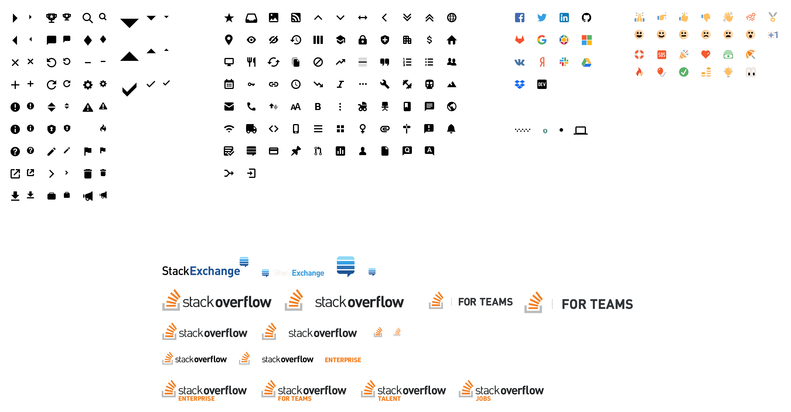
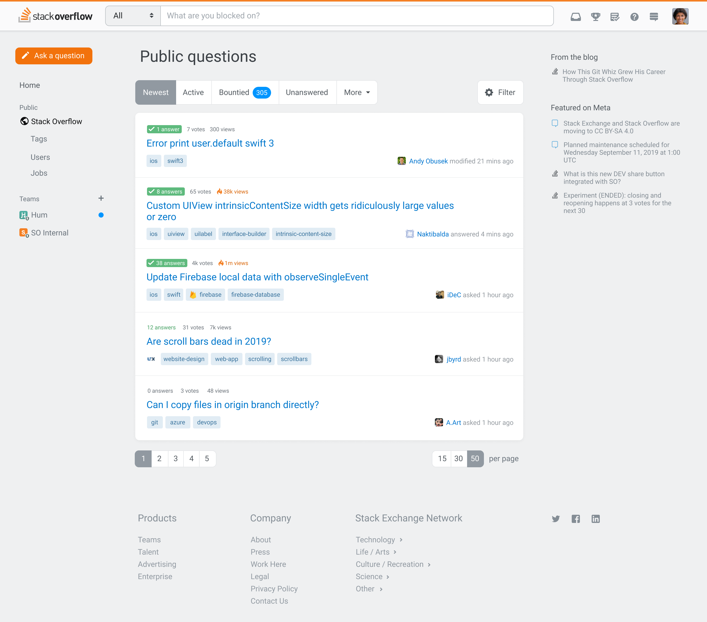

We tested basic layouts before diving into full mockups
We tested basic layouts before diving into full mockups
I joined Stack Overflow in the spring of 2017 as a product designer on their then in-beta product, Documentation. After that, I worked on various Q&A efforts. Eventually, I’d create and maintain their design system, Stacks.
Documentation was Stack Overflow’s attempt to improve technical reference materials by focusing on real world examples. Instead of simply documenting an API’s methods and parameters, Stack Overflow users could submit real-world examples of those APIs in use, each attempting to create the canonical example and gaining reputation for doing so. Just like answers to questions, examples could be upvoted—the best ones rising to the top.
At the time, I was coming off having written Hum, an iOS app for songwriting. Apple has amazing APIs in their iOS SDK, but many of their symbols lack official documentation. Additionally, this documentation fails to include rich examples, especially community-created examples to show how these methods are actually used. On top of an overall lack of documentation, the APIs often were half-implemented, and required workarounds found deep within Stack Overflow’s question base.
Documentation was an initial success. However, after the gold rush of early adopters adding their own canonical examples, usage began to decline. Myself, product manager Vasudha, and research intern Horyun, were tasked with figuring out how to build the next phase of Documentation.
This meant doing basic research about what Documentation should be, who it’d be for, and what people expected Stack Overflow’s version of Documentation would be. Horyun wrote in depth about her research methodology, and her time at Stack Overflow.
After initial rounds of research, we needed to test actual visuals of what this new version of Documentation might look like.
We tested basic layouts before diving into full mockups
We then moved on to testing mock layouts using pseudo documentation to gather what users valued from documentation around the web.
 In these mockups, we established the page layout while also exploring individual sections that were editable.
In these mockups, we established the page layout while also exploring individual sections that were editable.
 Early explorations on editing allowed for WYSIWYG-style editing of sections.
Early explorations on editing allowed for WYSIWYG-style editing of sections.
 Creating new topics would allow for template selection
Creating new topics would allow for template selection
 A full pseudo layout with everything a topic might have.
A full pseudo layout with everything a topic might have.
 Documentation would support responsive layouts on day one.
Documentation would support responsive layouts on day one.
These explorations all tested very well, but ultimately it would have been too much investment to build what Documentation truly required to succeed. The failure of Documentation changed Stack Overflow’s approach to product development across the company, moving beyond “let’s develop a new product and see how it goes” and into more robust research into product and market fit.

Q&A being the bread and butter of Stack Overflow, I was delighted to be invited to move over to the Community team after Documentation was shuttered.
Since we weren’t building a new product, there were lots of opportunities for improvements, big and small. We discovered new ways of watching tags, filtering questions, making new users feel welcomed, and how to market our products.
Though most users end up on Stack Overflow by directly searching for their problem on Google, many of our users browse our questions lists based on their interests. The community team needed a way to introduce robust sorting, filtering, while showing power users the algorithm behind pre-baked lists like “Newest” or “Active”.
 At the top of each question list, we introduced sorting and filtering.
At the top of each question list, we introduced sorting and filtering.
 If a user changes one of the sorting parameters, we give them the option to save their custom search.
If a user changes one of the sorting parameters, we give them the option to save their custom search.
 Editing a custom search within a modal.
Editing a custom search within a modal.
 Early explorations of sorting and filtering popovers.
Early explorations of sorting and filtering popovers.
Ultimately, a much simpler approach pitched by Lisa Park was best. We shipped a combined, Yelp-y set of filters and sorts in a single expandable view.

A powerful feature for those who browse Stack Overflow is watching tags. By watching tags, we weight questions in those tags and move them to the top of the lists. You can also receive an email digest of questions within those tags in varying frequency. We wanted to help surface its functionality.
 We added some tag management to the sidebar of question lists.
We added some tag management to the sidebar of question lists.
 We surfaced the ability to watch or ignore a tag any time a tag is presented.
We surfaced the ability to watch or ignore a tag any time a tag is presented.
 On the tag page itself, we also added some additional buttons for managing watching a tag.
On the tag page itself, we also added some additional buttons for managing watching a tag.
After launching our code of conduct, we needed a way to show that a user was new to Stack Overflow. This meant exploring ways to unify identy across the product. We shipped the smallest version of this, the hand waving saying they’re a new contributor.

My favorite part of product design is balancing quick wins with long-running redesigns. Simultaneously, the Community team was tasked with converting the site to a responsive layout, adding a persistent sidebar navigation, and refactoring our community’s bunch of themes.
Like a lot of our peers, Stack Overflow built mobile-specific views of our product. At the time, this made more sense than a responsive layout, since unifying on a responsive layout would require a heavy refactor and would force our users to download way more bytes to resource-constrained mobile devices than we’d feel comfortable. However, over the years, maintaining separate mobile experiences became a maintenance burden. Often, the desktop views would receive security fixes and UX improvements that our mobile views would not.
We also introduced a left navigation to the side of all Q&A experiences. As we looked at introducing Teams in the context of Stack Overflow it became obvious that we needed to review our overall information architecture. Fellow designer Donna covered the details and rationale in her blog post. By adding the left nav we were able to scale our navigation beyond the header, allowing us to convert a larger set of pages to a responsive layout.
While building new features, even ones that should be quick wins, theming was a consistent source of frustration to the product team. Like the early days of Reddit and MySpace, the themes varied wildly in their technical and visual execution. Some themes had rich illustrations, custom badges and image sprites, custom buttons, headers, and even animation. Theming a community was used as a test project for some new designers, and an exercise while onboarding others to the team.
I was tasked with figuring out how to unify the elements of a community that could be themed, allowing some themes to become more expressive, while others would be reined in. This required auditing all our CSS and radically simplifying how these theming variables are passed around our codebase. To put it politely, our CSS bundles had grown organically over the years. Unifying our themes was a worthy opportunity to refactor our theming CSS. We could ship a more consistent theming experience that wouldn’t get in the way of more rapidly shipping features.
With community theming as an entry into systems work, I began to do a lot of thinking about what a potential design system might look like at Stack Overflow.
Toward the end of my time at GitHub, Diana Mounter had introduced a robust set of "utility" CSS classes. With some skepticism, I found they were an amazing approach at scale. Designers and engineers didn’t need to worry about where to place CSS or how to extend existing components (if they existed)—we could just chain together classes in the view itself. Fixing a bug in a certain view meant we’d be much less likely to introduce a bug elsewhere in the product, since atomic classes were scoped only to that element on the page you were modifying.
Taking inspiration from Tailwind, Tachyons and Basscss, I created a set of atomic utility classes that could express the entirety of the CSS spec without having to introduce any redundant CSS. This set of immutable atomic classes with the DNA of Stack Overflow made for an incredibly flexible entry point to a design system.
John Polacek has the greatest argument for atomic CSS that I’ve ever seen. This slide deck is just so good, I think you should stop reading this post and check it out immediately.
Instead of shipping a few rigid components to start, I started building a full set of atomic classes. Traditional design systems initially have trouble scaling, often starting with button components, and, if your organization recognizes the value of a design system, moves beyond to things like navigation patterns. Often, these components are too rigid, and have to little resources to provide for every edgecase in a component. This leads to engineers and designers being frustrated with technical constraints, leading them to reject the system altogether.
Atomic CSS was a wildly different entry point. It allowed our engineers and designers to use it immediately. Chaining together atomic classes allowed folks to build components that didn’t exist, and easily extend the components that did. After all, every component is perfect in the vacuum of a page with a white background, but as soon as those components are used elsewhere, it’s often the case that a component may actually need a drop shadow, or a slightly different shade of gray as a background. Atomic classes solved some of the common workflow pain points that our full stack engineers were already having every day at Stack Overflow.
I was met with similar skepticism that I’d felt on the other side at GitHub. I had to pitch switching a decade’s worth of writing traditionally-scoped BEM-based CSS. Ultimately, the benefits of a fixed, immutable CSS bundle would sell our bottomline-conscious engineers on our architecture team. Meticulous documentation further convinced engineers dipping their toes into writing CSS atomically. Designers were eventually swayed by taking a half an hour to re-implement existing user interfaces with our work-in-progress atomic CSS library. Personally, it took me actually using an atomic CSS library to understand that it’s a worthy approach, and our crew at Stack Overflow was no different.
[[demo difference between atomic and traditional css]]
Once the designers were on board, we called the design system Stacks. We purchased our domain stackoverflow.design and released the first versions of our design system documentation on GitHub Pages. Eventually, as the needs of our documentation grew, we switched to the absolutely incredible Netlify.
Netlify allows for way more flexibility, allowing us to rely on custom Jekyll plugins for things like inserting icons from our icon set. It also allows for their absolute-killer feature—branch previews. Every pull request we have on our design system is matched by a preview URL, allowing us to try wildly different ideas, making sure anyone of any technical skill level at Stack Overflow and our open source community can preview our new features.
Now, the problem with atomic CSS is you often repeat yourself chaining together pretty verbose strings of classes to create things like buttons. These were the first things we turned into components. This list quickly grew into form elements, popovers, tables, and links. Very quickly Stacks began taking shape as a true design system. Of course, any one of these components could be overridden using atomic styling. This is incredibly important for those edge cases that the design system couldn’t reliably predict or guard against in the first place.
We chose a modified BEM approach, for historical reasons. Our components are namespaced with the s- prefix. s-btn applies initial button styling, while modifiers are expressed as s-btn__primary. If there are child elements, they’re expressed as s-btn--number and so forth. This pattern has suited us well, since when you know the internal logic of the class naming system, you can tell at a glance how the markup is structured by the CSS alone.
Eventually, each of our components will have stock interactions provided by a corresponding JavaScript controller. On Stacks, we chose Stimulus as a dependency for our handing events, and assigning data attributes across our markup, regardless of if it’s coming from legacy views, the odd angular view, or via AJAX. Regardless of how our DOM is loaded, our Stimulus-powered components will have the interactivity engineers and users expect.
Mostly, this just means that certain components have built-in logic for showing and hiding. In the case of our popovers component, it allows us to assign positioning, wire up the originating element, and handle closing events.
Our Stimulus controllers are written using TypeScript that is compiled to vanilla JS. All credit goes to three engineers, all named Benjamin. Benjamin Dumke Von Der Er vetted and chose Stimulus as a framework. Ben Kelly wrote our popovers component and helped further our decisions there. Benjamin Hodgson helped convert our JavaScript controllers to TypeScript.
At GitHub, I learned the value of a system-wide icon set. Stack Overflow was no different. Users would be shown the same consistent metaphor across the product. We’d deliver these icons as SVG, directly injecting them into the page and allowing for their colors to come directly from the text color of their parent. I took the same approach at Stack Overflow with some important modifications.
Our icons are drawn at native sizes of 16px within an 18px frame. We also have smaller variations of most our glyphs at 12px within a 14px frame. The API for adding them to the view is simple. We call @Svg.IconName. Optionally, we can add any classes that we need @Svg.IconName.With("js-target d-flex").
Additionally, we can pass @Svg.IconName.With("native") to allow any native colors shine through. Some of our icons look like rich emojis unless we override them with the parent text color. This allows us to ship features like reactions.
In the future, we plan to deliver spot illustration versions of most of the metaphors in our icon set. This will enable our metaphors to scale from 12px up to 128px, adopting the appropriate aesthetic at the proper scale and pixel-fitting.
The icon set is an open source repo on GitHub.
We borrowed heavily from Tailwind when designing the classes for conditional classes. Since Stack Overflow is transitioning to responsive views across the product, we needed a way to quickly override styling at the breakpoints our product has unified on. We offer a large, medium, and small breakpoints. These pixel values have been abstracted, allowing folks to use predefined max-width media query breakpoints represented by t-shirt sizes. A common example would be to apply .md:fd-column to a flex container with d-flex. This means, “At the medium breakpoint and smaller, switch the grid from columns to rows by applying .fd-column.”
Additionally, we offer conditional classes for hover, focus, and printing. For print, this often means adding p:d-none, simply hiding an element when printing.
Like most design systems, Stacks started as a side project. In between project work, I was first able to systematize our icon set. I was then able to experiment with atomic CSS classes and begin documenting them in a private repo. This allowed me and other collaborators interested in the design system to share our ideas about how these classes would be named, and how folks might interact with any APIs we’d offer.
Just prior to when frontend work on our newest flagship product, Teams, was slated to begin, Stacks dropped its first versions into production. This allowed each crew assigned to building Teams to rapidly build the onboarding, product, and admin views using a fixed atomic bundle. No new CSS had to be written or shipped— we only needed to chain our atomic classes together in the view themselves. Designers could assemble user interfaces in Codepens before the backends were ready.
Stacks proved itself as a force multiplier very quickly in building the product, but soon after was put to the test in our marketing pages. Entire suites of marketing pages launched to talk about Teams without shipping a new line of CSS.
For every hour that I’d spent systematizing things with Stacks, each engineer got at least an hour back. Stacks very quickly paid for itself, allowing me to more effectively argue moving from working as a product designer on specific features to working on Stacks itself. After a year of working on Stacks in a part-time fashion, I was able to convince management of its value. As of January 1, 2019, I’m Stack Overflow’s Design Systems Lead.
Stack Overflow has traditionally employed "full stack" designers, meaning each designer we hired was also able to ship their own frontends. We’ve since started diversifying our skill levels, meaning that our design system couldn’t just include code. At the time Stacks was built, we were largely standardized on Sketch. While I absolutely adore Sketch, I found the distributed document model of Figma incredible for collaboration, especially after a brief stint freelancing for Black Pixel. Using the design surface as the presentation layer itself, was incredibly powerful. Since design systems is largely about having a single source of truth, I found Figma to be the closest equivalent to that. You can trade a single link back and forth like a Google Doc, and always be ensured you’re seeing the latest and greatest.
It took a lot of internal evangelizing to switch to Figma, but since delivering all our shared components from our design system to components in our design tool, the case was much easier to make. Product designers, regardless of their ability to code, can now drag components from our codebase to their canvases, quickly assembling their features for handoff to engineers.
We have a long road to go on implementing Stacks across Stack Overflow. Sustained refactor has to happen in order to get our code coverage to the point where we can make larger, sweeping changes. Like atomic classes being an entry point into a design system, our design system is an entry point to a wider redesign of our product.
Sadly, it’s a common refrain that Stack Overflow isn’t a friendly product. While most of these issues can and should be solved by hard choices in Stack Overflow’s set of features, we can’t discount the effect that aesthetics alone can have on a product. Beyond strong community moderation and proper opinionated features like flagging, and automatic sentiment analysis, we can look at our product systemically to change our users’ overall perception.
A note for our users that may be reading this—this is merely an exploration of the profound effect of what redesigning the key elements within our design system can result in. Here we’ve changed the typeface, the overall padding scale, font sizing scale, and corner radii.
Changing aesthetics isn’t merely a matter of taste or friendliness. At any scale, but especially at Stack Overflow’s, so called design "edge cases" can still mean huge numbers of users.
Within early versions of Stacks, every color was created by a set of variables at compile team. These are evaluated as Less variables. Throughout our product, we’ve specified single values for orange, blue, powder, green, red, and yellow. These color values are then transformed by Less functions like darken, lighten, and saturation.
Ultimately, at the system level, it’s Stacks’s responsibility to enable color features like dark mode, high contrast mode, and black and white variations of our color sets.
Naively, our entire color scale, represented as 10 steps between color-050 through color-900 was built linearly. Understandably, this resulted in a pretty uneven distribution of perceived darkness and lightness across the varying hues. Additionally, we’d need to transform this color scale to make sense in dark mode, and other more accessible explorations.
At the darker end of the spectrum, I found our colors were too close to black to distinguish each at the 900 level. red-900 didn’t read as red when applied as a background. Shifting the darker end of the spectrum away from black allowed for keeping those colors discernible.
At the lighter end, I found our 050 variables were too close to white. Using Lyft’s color box allowed me to establish color stops that adhered to more standard easing curves that go well beyond a simple linear addition of black or white.
Since no color exists in a vacuum, and context is everything, colors were then hand-tuned to real-world applications. In our s-notice component, we wanted the brightest applications of our colors to still be legible as their base hues against most background colors.
[[Before and after of our color hues]]
When initially exploring dark mode, I first naively simply reversed our black and white scale, swapping white for our darkest black and vice-versa. This resulted in a very high-contrast execution of dark mode. In practice, we found it much more appropriate to start with a mockup of what our dark mode should be. In actuality, it made much more sense for the darkest color in dark mode to be much less contrast than a hard switch from #fff to #000. After all, if we start with a deep black as our base color, we won’t be able to apply things like shadows. Our dark mode should feel like the lights have been turned off, not the complete absence of all light.
Once I established our baseline of contrast in dark mode, I needed to figure out how our colors would translate against this lower contrast dark background. Like the grayscale color sequence, I couldn’t simply reverse the color values. Additionally, I needed to shift the hues to maintain vibrance against the gray backgrounds if we were going to have a composition that made any sense.
[[dark exploration of orange]]
After dropping support for Internet Explorer, Stacks was able to switch from compile-time Less variables for color, to native CSS variables that are evaluated at run time. This would allow Stack Overflow to assign colors based on dark mode media queries.
Frustratingly, this meant refactoring much of our codebase to no longer rely on Less’s color methods. We’d have to convert any reference to darken, lighten, or fade with actual color variables since Less can’t apply darken to a CSS variable.
For example, our primary buttons were originally expressed as background-color: @blue-600. On hover, we’d apply background-color: darken(@blue-600, 10%). With CSS variables, we’d have to be much more explicit. Instead, we’d have to express our buttons as background-color: var(--blue-600) with hovering declared as background-color: var(--blue-700) since Less can’t compile what is only evaluated at runtime. Across Stacks, and the rest of the product’s CSS bundles, I’d have to make these choices hundreds of times to get our css to compile.
Like all of our other conditional classes, I also built our system to allow for dark-mode overrides. In dark mode, sometimes the best application of color isn’t our best guess, since, like always, context is so important. Our entire color set is offered as d: conditional classes. If something is bg-black-100 by default, we can switch the color by adding d:bg-black-300 to choose a different color value in dark mode.
We also scoped our dark mode shift to a class on our body. Dark mode won’t be applied unless the body first has the class has-darkmode. Only then our colors are shifted. In a similar fashion, our body can also take the has-highcontrast class for low-sighted users.